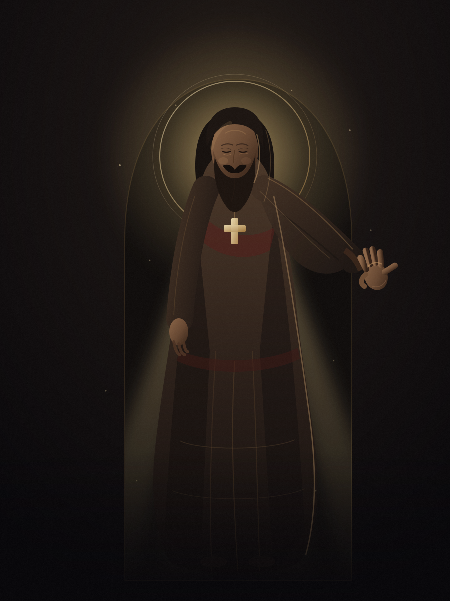
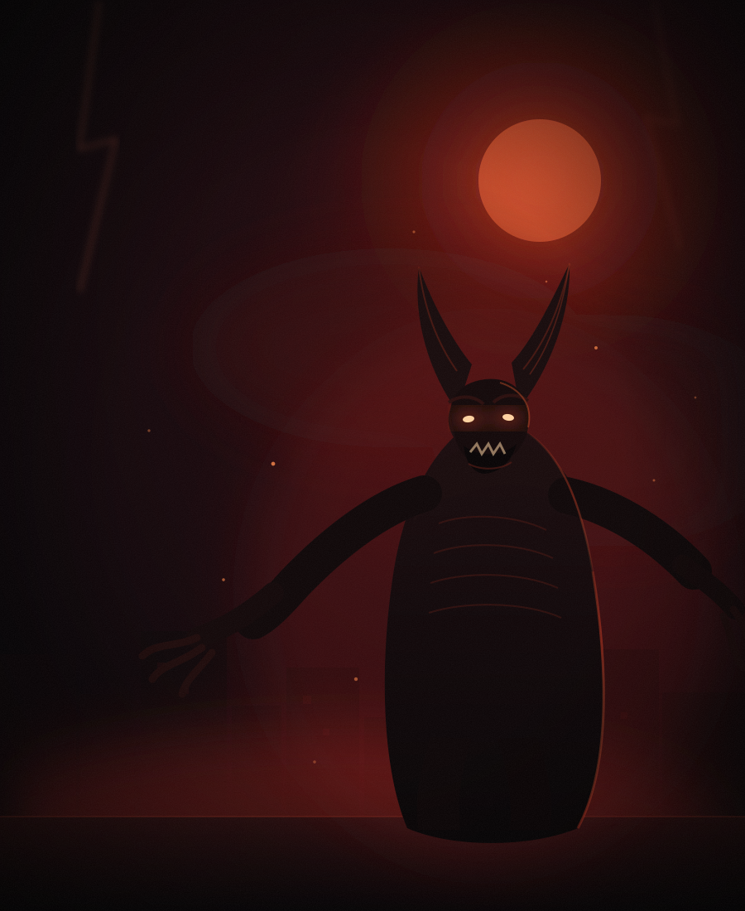

Он стоит перед тобой и протягивает руку.
Выбор — только твой.
Хранитель рассыпал крест на семь осколков и убегает. Догони его, собери осколки и почини крест — пока не истекло время.

Ты выбрал идти один. Позади — демон. Он не отстаёт и говорит то, что ты и сам боялся услышать.
Сними галочку, если готов услышать его без фильтра. 18+
Демон выбился из сил. Он опустился на колени и смотрит на тебя. В его глазах — страх.
Что ты сделаешь?
Демон остался жив. И мир не исчез — он растворился в свете.
Иисус подошёл, поблагодарил тебя… и поцеловал в лоб.
«Ты выбрал милость. Это и есть путь».
Не убивай врага своего —
убив его, ты не убьёшь вражду.
Семь кругов позади. Ты не оставил крест разбитым — и свет больше не гаснет.
«Иди с миром».
Демон не устал. Он просто больше не отпускал.